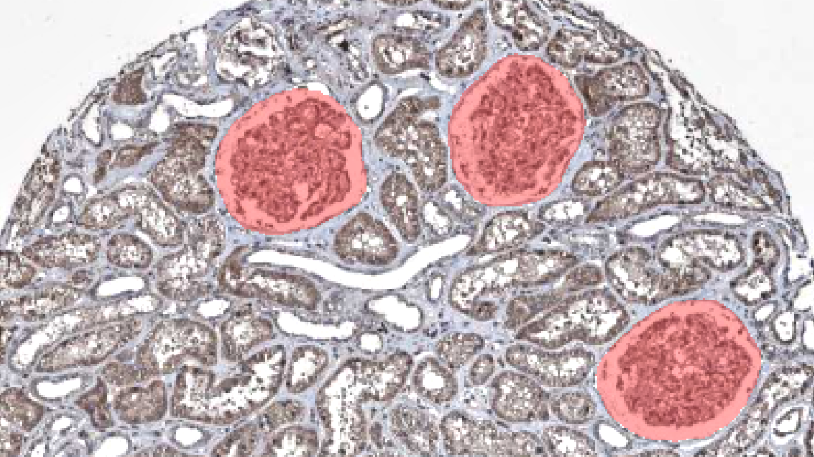
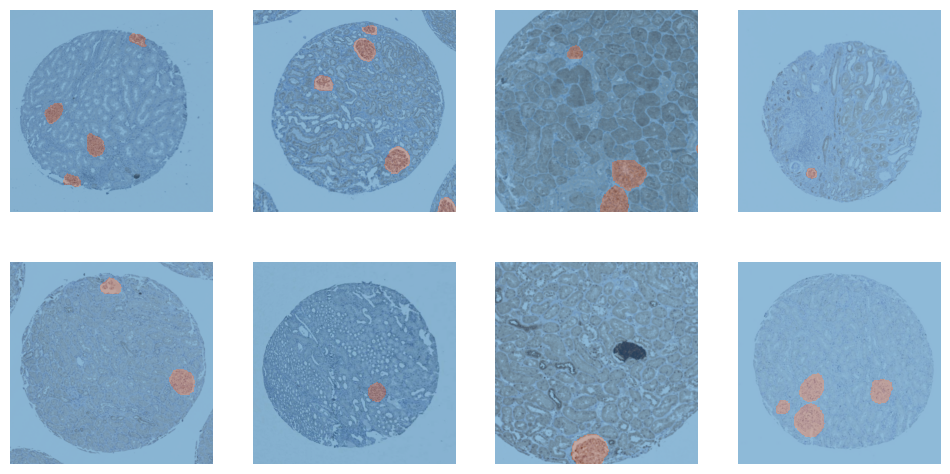
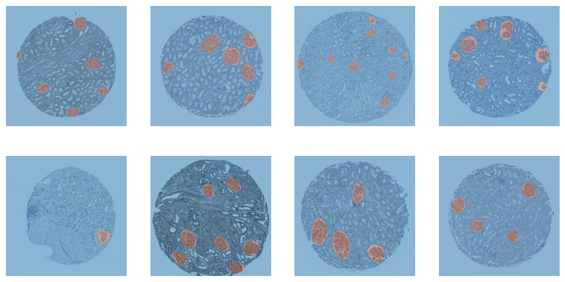
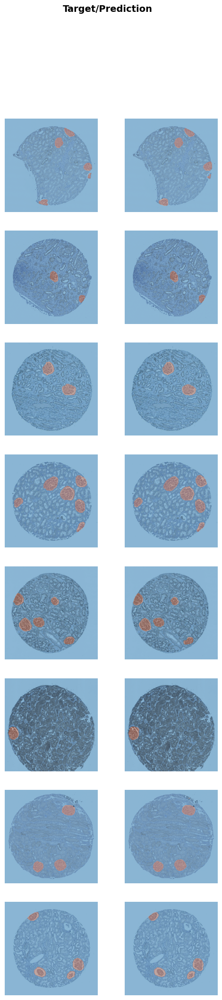

Training an Unet++ with fastai to segment glomeruli.

Model Training Notebook
Here we train a Unet++ architecture with a pretrained efficientnet-b4 backbone from the awesome segmentation_models_pytorch library. Data loading, transforming, the actual training and, finally, exporting the newly trained model, we use fastai.
Here's a running example of the model trained with this notebook.
Goal
Segmenting glomeruli (an intricate structure in the kidney's cortex in which the blood filtration happen), i.e. turning this
<img src="input_example.png" width="200" style="border-radius: 10px;"/> to this <img src="segmented_example.png" width="200" style="border-radius: 10px;"/>
Data
I am using training data from the HuBMAP Challenge hosted on kaggle and a few dozen images downloaded from the Human Protein Atlas I annotated myself. (If you're interested in how to do this, here a blogpost I wrote)
import numpy as np
import pandas as pd
import monai
from fastai.vision.all import *
import segmentation_models_pytorch as smpORGAN = "kidney"
TRAIN_BATCH_SIZE = 8 # Reduce this, if you run out of cuda memory
EFFECTIVE_BATCH_SIZE = 8 # This is the batch size that will be used for training
IMAGE_SIZE = 512
LR = 3e-4
EPOCHS = 60
MODEL_NAME = f"smp_{IMAGE_SIZE}_{ORGAN}_added_data"
DATA_PATH = Path("../data/")# Reproducibility
TESTSET_SEED = 93
TRAIN_VAL_SEED = 43df = pd.read_csv(DATA_PATH/"train.csv") # This is the training set from the competition
fns = L([*get_image_files(DATA_PATH/"test_images"), *get_image_files(DATA_PATH/"train_images")]) # List of all competition images
fn_col = [] # This will be a column in the dataframe, containing the filenames
for _, r in df.iterrows(): fn_col.append([fn for fn in fns if str(r["id"]) == fn.stem][0])
df["fnames"] = fn_col
df["is_organ"] = df.organ.apply(lambda o: o==ORGAN)
df = df[df.is_organ] # Only keep images with the organ we are interested in
assert df.organ.unique()[0] == ORGAN
df = df.drop(columns="organ data_source is_organ tissue_thickness pixel_size sex age".split()).copy()# These are the images I added and that are annotated by me
add_images = get_image_files(DATA_PATH/"add_images/")
add_images_masks = get_image_files(DATA_PATH/"segs/")# The masks have the same name as the images, but with "_mask" appended
masks = [p.name[:-9]+".png" for p in add_images_masks]
# Delete images without masks
images_to_delete = [p for p in add_images if p.name not in masks]
for p in images_to_delete: p.unlink()
# This will contain the masks in the same order as the images
sorted_masks = []
for i in add_images:
sorted_masks.append([p for p in add_images_masks if i.stem == p.stem[:-5]][0])# Combine the competition data with the added data
add_df = pd.DataFrame({
"fnames": add_images,
"segmentation": sorted_masks,
"is_add": [True]*len(add_images)
})
df["is_add"] = df.id.apply(lambda p: False)
combined_df = pd.concat([df, add_df])# Setting aside a random testset
cut = int(0.1 * len(combined_df))
ind = np.arange(len(combined_df))
np.random.seed(TESTSET_SEED) # Always create the same testset
np.random.shuffle(ind)
test_ind = ind[:cut]
train_valid_ind = ind[cut:]
test_df = combined_df.iloc[test_ind,:].copy()
train_df = combined_df.iloc[train_valid_ind,:].copy()The masks of the competition data are in run-length encoding, that's why we need the following function. It converts the run-length encoding to a numpy array which we can use for training.
# From: https://www.kaggle.com/code/paulorzp/run-length-encode-and-decode/script
def rle_decode(mask_rle, shape):
'''
mask_rle: run-length as string formated (start length)
shape: (height,width) of array to return
Returns numpy array, 1 - mask, 0 - background
'''
s = mask_rle.split()
starts, lengths = [np.asarray(x, dtype=int) for x in (s[0:][::2], s[1:][::2])]
starts -= 1
ends = starts + lengths
img = np.zeros(shape[0]*shape[1], dtype=np.uint8)
for lo, hi in zip(starts, ends):
img[lo:hi] = 1
return np.reshape(img, shape)CODES = ["Background", "FTU"] # FTU = functional tissue unitdef x_getter(r): return r["fnames"]
def y_getter(r):
# My additional annotations are saved as pngs, so I need to differ between the two
if r["is_add"]:
im = np.array(load_image(r["segmentation"]), dtype=np.uint8)
im = (im.mean(axis=-1) < 125).astype(np.uint8)
return im
rle = r["rle"]
shape = (int(r["img_height"]), int(r["img_width"]))
return rle_decode(rle, shape).Tbtfms = aug_transforms(
mult=1.2,
do_flip=True,
flip_vert=True,
max_rotate=45.0,
min_zoom=1.,
max_zoom=1.5,
max_lighting=0.3,
max_warp=0.3,
size=(IMAGE_SIZE, IMAGE_SIZE),
p_affine=0.5
) # Data augmentation
dblock = DataBlock(blocks=(ImageBlock, MaskBlock(CODES)),
get_x=x_getter,
get_y=y_getter,
splitter=RandomSplitter(seed=TRAIN_VAL_SEED),
item_tfms=[Resize((IMAGE_SIZE, IMAGE_SIZE))],
batch_tfms=btfms)
dls = dblock.dataloaders(train_df, Path(".."), bs=TRAIN_BATCH_SIZE)dls.train.show_batch()
<Figure size 1200x600 with 8 Axes>
dls.valid.show_batch()
<Figure size 1200x600 with 8 Axes>
cbs = [
GradientAccumulation(EFFECTIVE_BATCH_SIZE),
SaveModelCallback(fname=MODEL_NAME),
]model = smp.UnetPlusPlus(
encoder_name="efficientnet-b4",
encoder_weights="imagenet",
in_channels=3,
classes=2,
)# Splitting model's into 2 groups to use fastai's differential learning rates
def splitter(model):
enc_params = L(model.encoder.parameters())
dec_params = L(model.decoder.parameters())
sg_params = L(model.segmentation_head.parameters())
untrained_params = L([*dec_params, *sg_params])
return L([enc_params, untrained_params])learn = Learner(
dls,
model,
cbs=cbs,
splitter=splitter,
metrics=[Dice(), JaccardCoeff(), RocAucBinary()])learn.fit_flat_cos(EPOCHS, LR)<IPython.core.display.HTML object>
<IPython.core.display.HTML object>
Better model found at epoch 0 with valid_loss value: 0.6031481027603149. Better model found at epoch 1 with valid_loss value: 0.516569972038269. Better model found at epoch 2 with valid_loss value: 0.3792479634284973. Better model found at epoch 3 with valid_loss value: 0.302621066570282. Better model found at epoch 4 with valid_loss value: 0.20762743055820465. Better model found at epoch 5 with valid_loss value: 0.14218230545520782. Better model found at epoch 6 with valid_loss value: 0.10715709626674652. Better model found at epoch 7 with valid_loss value: 0.0884983241558075. Better model found at epoch 8 with valid_loss value: 0.07099024951457977. Better model found at epoch 9 with valid_loss value: 0.06164400279521942. Better model found at epoch 10 with valid_loss value: 0.0527963824570179. Better model found at epoch 11 with valid_loss value: 0.046286918222904205. Better model found at epoch 12 with valid_loss value: 0.04076218977570534. Better model found at epoch 13 with valid_loss value: 0.037156544625759125. Better model found at epoch 14 with valid_loss value: 0.0331517718732357. Better model found at epoch 15 with valid_loss value: 0.031111164018511772. Better model found at epoch 16 with valid_loss value: 0.027760174125432968. Better model found at epoch 18 with valid_loss value: 0.024333978071808815. Better model found at epoch 19 with valid_loss value: 0.024281086400151253. Better model found at epoch 20 with valid_loss value: 0.022132011130452156. Better model found at epoch 21 with valid_loss value: 0.021513625979423523. Better model found at epoch 22 with valid_loss value: 0.020441483706235886. Better model found at epoch 24 with valid_loss value: 0.018416451290249825. Better model found at epoch 25 with valid_loss value: 0.017508765682578087. Better model found at epoch 28 with valid_loss value: 0.016893696039915085. Better model found at epoch 30 with valid_loss value: 0.016375476494431496. Better model found at epoch 31 with valid_loss value: 0.0146623644977808. Better model found at epoch 37 with valid_loss value: 0.012930507771670818. Better model found at epoch 38 with valid_loss value: 0.01244184747338295. Better model found at epoch 39 with valid_loss value: 0.01162666454911232. Better model found at epoch 45 with valid_loss value: 0.011391145177185535. Better model found at epoch 48 with valid_loss value: 0.010892268270254135. Better model found at epoch 49 with valid_loss value: 0.010426941327750683. Better model found at epoch 52 with valid_loss value: 0.010209585539996624.
learn.load(MODEL_NAME)<fastai.learner.Learner at 0x7f2dd019eac0>
learn.show_results()<IPython.core.display.HTML object>
<IPython.core.display.HTML object>

<Figure size 600x2400 with 16 Axes>
# Create a dataloader from the testset
test_dl = dls.test_dl(test_df, with_labels=True)
dice_func = monai.metrics.DiceMetric(include_background=False, reduction="mean")# This function steps through the different thresholds and returns the best one
def get_best_threshold(learn, dl, metric_func, n_steps=17):
"""
Tests `n_steps` different thresholds.
Return the best threshold and the corresonding score.
"""
thresholds = torch.linspace(0.1, 0.9, n_steps)
results = []
res = learn.get_preds(dl=dl, with_input=False, with_targs=True, act=partial(F.softmax, dim=1))
for t in thresholds:
metric_func((res[0][:,1]>t).unsqueeze(1), res[-1].unsqueeze(1))
metric = metric_func.aggregate().item()
metric_func.reset()
results.append((round(t.detach().cpu().item(), ndigits=3), metric))
return sorted(results, key=lambda tpl: tpl[1], reverse=True)[0]best_threshold, _ = get_best_threshold(learn, dls.valid, dice_func)
best_threshold<IPython.core.display.HTML object>
<IPython.core.display.HTML object>
0.6
And now we test the model on the training, validation and test set with the best threshold.
def test_model(learn, dl, metric_func, threshold=0.5):
res = learn.get_preds(dl=dl, with_input=False, with_targs=True, act=partial(F.softmax, dim=1))
metric_func((res[0][:,1]>threshold).unsqueeze(1), res[-1].unsqueeze(1))
metric = metric_func.aggregate().item()
metric_func.reset()
return metric
train_dice = test_model(learn, dls.train, dice_func, threshold=best_threshold)
valid_dice = test_model(learn, dls.valid, dice_func, threshold=best_threshold)
test_dice = test_model(learn, test_dl, dice_func, threshold=best_threshold)
for s, d in zip(("Training Dice:", "Valid Dice", "Test Dice"), (train_dice, valid_dice, test_dice)):
print(s, d)<IPython.core.display.HTML object>
<IPython.core.display.HTML object>
<IPython.core.display.HTML object>
<IPython.core.display.HTML object>
<IPython.core.display.HTML object>
<IPython.core.display.HTML object>
Training Dice: 0.9252251982688904 Valid Dice 0.9271063208580017 Test Dice 0.9414731860160828
# Save and export the model
BEST_MODEL_NAME = f"unetpp_b4_th{int(best_threshold*100)}_d{str(test_dice)[2:6]}"
learn.save(BEST_MODEL_NAME)
learn.export(BEST_MODEL_NAME+".pkl")A live version of this model is deployed on a huggingface space.